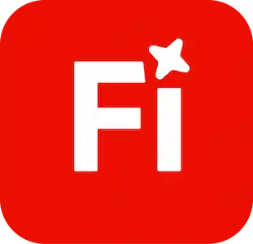
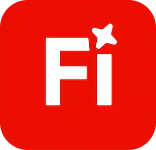
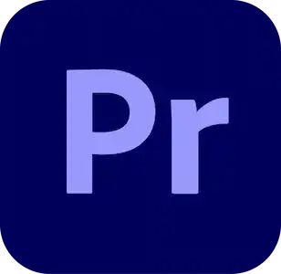
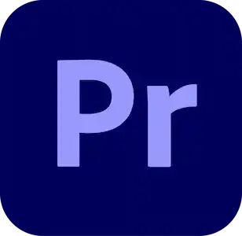

Maya
C. Jensen
Hvem er
Maya Christine Jensen
Mit navn er Maya Christine Jensen, jeg er 22 år og bor i valby med min søde kærste. Efter jeg færdiggjorde min STX på Vestskovens gymnasium, holdte jeg 3 sabbatår, i og med jeg ikke vidste hvad jeg ville, og jeg var bange for at spilde min tid på en udannelse jeg ikke synes var interessant. Ret spontant tog jeg til åbent hus på EK med min svigermor, og udannelsen fangede mig fuldstændig! Nu er jeg milisekunder fra at færdiggøre mit første semester, og jeg har så meget blod på tanden, og glæder mig uendeligt meget til alt jeg kommer til at kunne tage med mig fra mine år på EK

Uddannelse
Folkeskole (Ådalsens Privatskole)
2009 - 2019
STX Gymnasial uddannelse (VGA)
2019 - 2022
Multimediedesign (EK)
2025 - 2027
Erhvervserfaring
Medarbejder hos Albertslund rideklub
2018 - 2022
Medarbejder hos Trækronerne Vuggestue
2022 – 2024
Medarbejder hos Brøndby Stadion (Tjener i VIP-Lounge)
2022 - 2023
SoMe kampanger for forskellige virksomheder
2024 - 2025
Tjener hos BookTjener
2024 – 2025
Ansat hos Eventurebooking
2024 - 2025
Lærervikar hos Ådalens privatskole
2024 – 2025
Erhvervserfaring
2018 – 2022 Medarbejder hos
Albertslund rideklub
2022 – 2024 Medarbejder hos
Trækronerne Vuggestue
2022 – 2023 Medarbejder hos Brøndby
Stadion (Tjener i VIP-Lounge)
2024 – 2025 Lærervikar på Ådalens
privatskole
2024 – 2025 SoMe kampagner for
forskellige virksomheder
2024 – 2025 Tjener hos BookTjener
2024 – 2025 Ansat hos
Eventurebooking
2024 – 2025 Lærervikar hos Ådalens
privatskole
Hvad lærte jeg på 1. semester
1. semester har virkelig dannet grundlaget for min faglige udvikling. Jeg sidder nu med en solid basisviden, som jeg kan bygge videre på fremover. Gennem de forskellige opgaver har jeg lært, hvordan et website bliver til - fra research og idé, til wireframes, digital prototype og videre til et kodet, responsivt site. Jeg har arbejdet med HTML, CSS og JavaScript og er blevet mere sikker i at opbygge struktur, navigationssystemer og layouts, der fungerer på både mobil og desktop. Samtidig har jeg fået en bedre forståelse for brugeroplevelse gennem research, brugertest og feedback, som jeg har brugt til at justere indhold, struktur og design, så løsningerne bliver mere overskuelige og nemme at bruge.
Derudover har jeg arbejdet en del med visuel produktion og grafisk formidling. Jeg har brugt Adobe Illustrator til infografik og grafiske elementer, AI-generering til udvikling af billedmateriale samt Adobe Photoshop til billedredigering. Jeg har også arbejdet med Adobe Premiere Pro til videoredigering, hvilket har givet mig erfaring i at tænke visuelt indhold på tværs af medier og formater.
I gruppeprojektet har jeg fået erfaring med samarbejde og planlægning. Vi brugte Trello til at fordele opgaver og GitHub til at arbejde sammen om koden. Her har jeg lært at arbejde i branches og samle ændringer, så vi kunne udvikle på samme projekt uden at overskrive hinandens arbejde. Samlet set har opgaverne gjort mig mere tryg ved både designprocessen, den tekniske del af webudvikling og arbejdet med digitalt indhold.
Samlet set har 1. semester gjort mig mere tryg i både designprocessen og den tekniske del af webudvikling. Jeg har lært at kombinere struktur, design, indhold og brugeroplevelse - og har fået et solidt fundament, som jeg kan bygge videre på i de kommende semestre.
 

 
